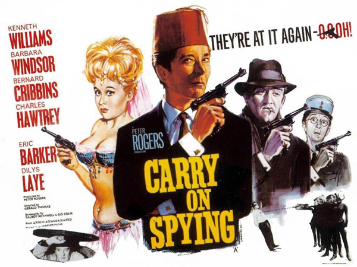
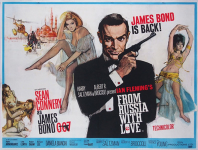

Peter Rogers
Talbot Rothwell
Sid Colin
Vicki Smith (uncredited)
Maya Koumani (uncredited)
A top-secret chemical formula has been stolen by STENCH (the Society for the Total Extinction of Non-Conforming Humans). Fearful of the formula falling into the wrong hands, the chief of the Secret Service reluctantly sends the only agent he has left, the bumbling and silly Agent Desmond Simpkins (Kenneth Williams), and his three trainees - Agent Harold Crump (Bernard Cribbins), Agent Daphne Honeybutt (Barbara Windsor), and Agent Charlie Bind (Charles Hawtrey) - to retrieve the formula.
The agents travel separately to Vienna, where each makes contact with Carstairs (Jim Dale), who assumes a different disguise each time. Next, they rendezvous at the Cafe Mozart and later travel on to Algiers. Upon the way, they encounter STENCH agents, the Fat Man and Milchmann (who stole the formula whilst disguised - befitting the English translation of his German name - as a milkman). Unfortunately, the agents' ineptitude results in Carstairs being floored in an encounter with the Fat Man.
Daphne and Harold attempt to steal the formula back whilst disguised as dancing girls in Hakim's Fun House, where the Fat Man is relaxing. The agents also encounter the mysterious Lila (Dilys Laye), whom they are uncertain to trust. With the STENCH henchmen close on their heels, the agents have no other choice but to have Daphne memorize the formula with her photographic memory, before the four of them destroy the formula papers by eating them with soup.
The four agents end up captives of STENCH. Daphne is interrogated by the evil Dr. Crow (played by Judith Furse and voiced by John Bluthal), head of STENCH, but she fails to succumb until she accidentally bumps her head, causing her to reveal the formula. Simpkins, Crump, and Bind manage to escape their cell and to collect Daphne and Dr. Crow's tape recording of Daphne's recitation, but are caught up in an underground automated factory process, from which they escape only when Lila pulls a gun on Dr. Crow, forcing her to reverse the process.
Simpkins sets the STENCH base to self-destruct before rushing into a lift with the other agents, as well as Lila and Dr. Crow. As the lift ascends, Lila reveals to Simpkins that she is a double agent working for SNOG (the Society for Neutralising Of Germs) and that she has a crush on him. The lift reaches the surface, which is revealed to be the office of the chief of the Secret Service; the headquarters of STENCH is right below the streets of London. STENCH headquarters self-destructs, choking the chief's office in a thick cloud of smoke.
Filming dates: 8 February – 13 March 1964.
Interiors: Pinewood Studios, Buckinghamshire.
The original name for Charles Hawtrey's character was originally intended to be called James Bind - 001 and a half. Alas following the threat of legal action by EON, producers of the James Bond Franchise, he was renamed Charlie Bind.
The film pokes fun at various spy movies, the James Bond series being the least of them. They include The Third Man (coincidentally, Eric Pohlmann, who plays The Fat Man, had a minor part in The Third Man and was the voice of SPECTRE No 1 in From Russia with Love). One or two of Crow's female assistants wear hairstyles similar to that of Modesty Blaise, whose adventures had started in the London Evening Standard the previous year.
The voice of Doctor Crow is provided by John Bluthal, who would go on to play Corporal Clotski in Carry On Follow That Camel.
The film was released under the title of "Agent Oooh!" in Europe.
This was the last 'Carry On' to be made in Black & White.
Variety - "Kenneth Williams' brand of camp comedy, while very funny in smallish doses, can pall when he has a lengthy chore as here. But Bernard Cribbins brings some useful virility to his fatuous role."
Empire Magazine - "More sprightly and less encumbered with the need to titillate that would ring-fence the Carry Ons in later life, there is a youthfulness about Spying that still remains fresher than the colour films."
